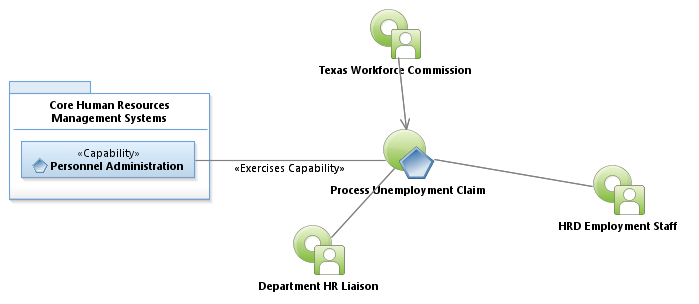
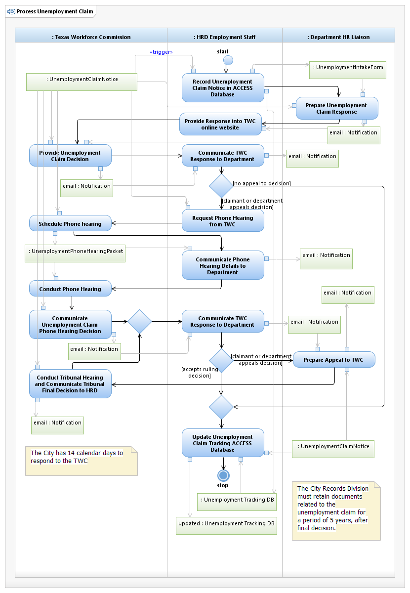

Use Case Model: Process Unemployment Claim
Architect: Aaron Brown, IT Enterprise Architect Senior
Date Last Modified:03/18/2013
User Review: Roberta Byram, Shelly Sheppard, Linda Escamilla
Approval Date:03/18/2013
Based on an unemployment claim notice from the Texas Workforce Commission (TWC), HRD Personnel and Department HR Liaison prepare response to the TWC, conduct phone hearings and tribunal hearings to develop unemployment claim decision.
Follow link to Role Definitions

Use Case Model: Process Unemployment Claim

Activity Model: Process Unemployment Claim
Activity Documentation
| Activity | Documentation |
|---|---|
| Provide Response into TWC online website | Web site used is www.texasworkforce.org/ui/er.html, provide date of hire, end date, reason for termination, and all documents related to termination, who terminated, final incident. |
| Conduct Phone Hearing | This phone hearing may include the HR Department representative, the Supervisor, the former employee, and the Texas workforce commission...etc |